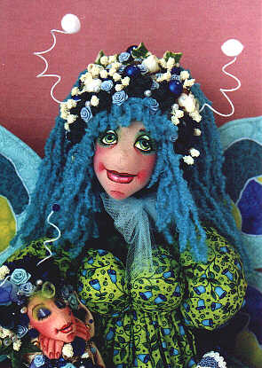

Perhaps you'd like to see Bluebell's sister doll "Hydrangea" or her cousin "Peony"? Different selections in fabrics, colors and trims allow you to customize these dolls to any whim. The information for ordering the "Hydrangea" pattern can be found on the "Hydrangea" page, or you can email me directly for more information.
"Bluebell" was part of the exhibit and she was also my centerpiece raffle doll at the final banquet at Doll U in
Oakland California this past September. She and her little companion caterpillar "Little Blue Twinkle" were won by
a member of the Dallas Ditzy Doll Tarts, my own cloth doll club. (No.....I didn't fix it that way....it just
happened that way....honest!)

"Bluebell" and "Little Blue Tinkle" can also be ordered as finished dolls, in your choice of colors, individually, or as a set. Contact me for prices, availability of colors and length of order time.
If you would like be a part of the online class that teaches you how to make "Hydrangea" (who masquerades as
"Bluebell" without the Hydrangea jacket), just click to Doll
Street University Sign-up to join us.